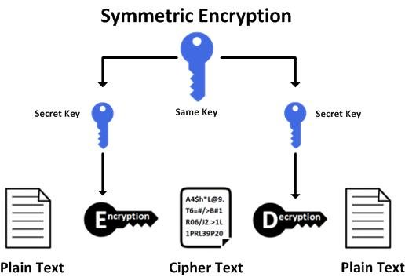

Ahora nos interesa no sólo verificar la integridad de la información intercambiada, sino también mantener su privacidad, es decir, que no sea "comprensible" durante la transmisión, intercambio o almacenamiento.
Tenemos un conjunto de algoritmos denominados de clave simétrica (también conocidos como de clave secreta) en los que, mediante la aplicación de una clave conocida tanto por el emisos como por el receptor, la información se encripta o cifra de forma que sólo pueda ser desencriptada o descifrada utilizando el mismo algoritmo y la misma clave.
El código Enigma
Como ejemplo de sistema simétrico está Enigma. Este fue un sistema empleado por Alemania durante la Segunda Guerra Mundial, en el que las claves se distribuían a diario en forma de libros de códigos.
Cada día, un operador de radio, receptor o transmisor, consultaba su copia del libro de códigos para encontrar la clave del día. Todo el tráfico enviado por ondas de radio durante aquel día era cifrado y descifrado usando las claves del día.
Inglaterra usó máquinas para descifrar las claves durante aquella guerra y aunque el citado sistema alemán, Enigma, estaba provisto de un amplio abanico de claves, los ingleses diseñaron máquinas de cómputo especializado, los Bombes, para comprobar las claves de modo mecánico hasta que la clave del día era encontrada.
Esto significaba que algunas veces encontraban la clave del día pocas horas después de que ésta fuera puesta en uso, pero también que otros días no podían encontrar la clave correcta.
Los Bombes no fueron máquinas de cómputo general, sino las precursoras de los ordenadores (computadoras) actuales.
Entre los algoritmos de cifrado simétrico más utilizados se encuentran

Para cifrar y descifrar un mensaje necesitamos una clave y escoger el tipo de cifrado que queremos. En JCA se procede de la siguiente forma:
A continuación podemos ver un ejemplo
public class U6S3_1_SecretKeyEncrypt {
public static void main(String[] args) {
SecretKey claveSecreta = null;
try {
//Generamos clave secreta
// Podemos crear una nueva clave
claveSecreta = getNewKey();
// O bien usar una clave guardada en algún almacén, fichero, etc.
claveSecreta = getKeyFromData();
System.out.println("Clave usada: " + claveSecreta.getFormat());
//Se define el objeto Cipher (Algoritmo/modo/relleno)
Cipher c = Cipher.getInstance("DESede"); // AES/ECB/PKCS5Padding
// Configuramos el modo de CIFRADO
c.init(Cipher.ENCRYPT_MODE, claveSecreta);
// Aquí leemos la información que queremos cifrar
// Puede ser una cadena o leerla de un archivo
byte[] textoPlano = "Texto que queremos cifrar para la prueba".getBytes();
// Si queremos ir cifrando poco a poco, vamos haciendo llamadas
// al método update
// c.update(textoPlano);
// Se realiza el proceso final de cifrado de la información
byte[] textoCifrado = c.doFinal(textoPlano);
System.out.println("Texto cifrado con clave secreta (raw):\n" + new String(textoCifrado));
System.out.println("Texto cifrado con clave secreta (hex):\n" + toHexadecimal(textoCifrado));
// El proceso de descifrado es equivalente
// Cambiamos el modo de ENCRYPT a DECRYPT
// Usamos la misma clave
// Pasamos el texto cifrado para obtener el original
c.init(Cipher.DECRYPT_MODE, claveSecreta);
byte[] textoOriginal = c.doFinal(textoCifrado);
//Leemos bloques de bytes del fichero y lo vamos escribiendo ya cifrado en el fichero de salida
System.out.println("Texto descifrado:\n" + new String(textoOriginal));
} catch (Exception e) {
e.printStackTrace();
}
}
static SecretKey getNewKey() throws InvalidKeySpecException, NoSuchAlgorithmException {
KeyGenerator kg = KeyGenerator.getInstance("DESede");
kg.init(112);
SecretKey clave = kg.generateKey();
return clave;
}
static SecretKey getNewRandomKey() throws InvalidKeySpecException, NoSuchAlgorithmException {
// Clave obtenida usando un generador de número aleatorios seguro
KeyGenerator genClaves = KeyGenerator.getInstance("DESede");
// Utilizamos un algoritmo de generación de aleatorios
SecureRandom srand = SecureRandom.getInstance("SHA1PRNG");
genClaves.init(srand);
SecretKey clave = genClaves.generateKey();
System.out.println("Formato de clave: " + clave.getFormat());
/*
SecretKeyFactory keySpecFactory = SecretKeyFactory.getInstance("DESede");
DESedeKeySpec keySpec = (DESedeKeySpec) keySpecFactory.getKeySpec(clave, DESedeKeySpec.class);
byte[] valorClave = keySpec.getKey();
*/
return clave;
}
static SecretKey getKeyFromData() throws InvalidKeySpecException, NoSuchAlgorithmException {
// La clave se puede obtener desde un fichero o cualquier otra fuente
byte valorClave[] = "12345678123456781234567812345678".getBytes();
SecretKeySpec keySpec = new SecretKeySpec (valorClave, "DESede");
SecretKeyFactory keyFactory = SecretKeyFactory.getInstance("DESede");
SecretKey clave = keyFactory.generateSecret(keySpec);
return clave;
}
static Key getKeyFromData2() throws InvalidKeySpecException, NoSuchAlgorithmException {
// La clave se puede obtener desde un fichero o cualquier otra fuente
byte valorClave[] = "12345678123456781234567812345678".getBytes();
Key clave = new SecretKeySpec(valorClave, "AES");
return clave;
}
static String toHexadecimal(byte[] hash) {
String hex = "";
for (int i = 0; i < hash.length; i++) {
String h = Integer.toHexString(hash[i] & 0xFF);
if (h.length() == 1) {
hex += "0";
}
hex += h;
}
return hex.toUpperCase();
}
}
y esta sería la salida proporcionada
Texto cifrado con clave secreta:
D0A61CD14B5844AD98B2C7BA795B327ACA0795B658C6F93EC6E1586A246BE71AC180B574207E8C4FFEB959B7D4642FCB
Texto descifrado:
Texto que queremos cifrar para la prueba
Hay que tener en cuenta que en el ejemplo la clave se está usando primero para cifrar y luego para descifrar. Si esto lo hacemos en programas separados, los programas que quieran comunicarse deberán tener acceso a la clave.
Lo que se suele hacer es almacenar la clave en un archivo y, cuando se necesita para cifrar o descifrar, se lee con un método similar al método getKeyFromData() del ejemplo anterior.
En la siguiente tabla tenemos los algoritmos, modos y tipos de relleno, junto con la longitud de clave empleada, de los algoritmos de cifrado simétrico m'as comunes.
| Transformación (algoritmo/modo/relleno) | Key Size |
|---|---|
| AES/CBC/NoPadding | 128 |
| AES/CBC/PKCS5Padding | 128 |
| AES/ECB/NoPadding | 128 |
| AES/ECB/PKCS5Padding | 128 |
| DES/CBC/NoPadding | 56 |
| DES/CBC/PKCS5Padding | 56 |
| DES/ECB/NoPadding | 56 |
| DES/ECB/PKCS5Padding | 56 |
| DESede/CBC/NoPadding | 168 |
| DESede/CBC/PKCS5Padding | 168 |
| DESede/ECB/NoPadding | 168 |
| DESede/ECB/PKCS5Padding | 168 |
| RSA/ECB/PKCS1Padding | 1024, 2048 |
| RSA/ECB/OAEPWithSHA-1AndMGF1Padding | 1024, 2048 |
| RSA/ECB/OAEPWithSHA-256AndMGF1Padding | 1024, 2048 |
Existen dos clases stream que permiten cifrar y descifrar directamente. Pertenecen al paquete java.crypto pero por lo demás funcionan exactamente igual que las clases Stream del paquete java.io, de las que además son clases descendientes y y tienen constructores que permiten crear streams encriptados sobre un InputStream y un OutputStream.
| Clase | Ejemplo |
|---|---|
| CipherInputStream | CipherInputStream (InputStream is, Cipher c) |
| CipherOutputStream | CipherOutputStream (OutputStream os, Cipher c) |
Por lo tanto, cuando tenemos que leer o escribir información, podemos añadir un envoltorio más al wrapper que utilizamos habitualmente y esto nos permite que tanto las lecturas como las escrituras se hagan cifradas, usando el algoritmo y la clave definidos para el objeto Cipher.
El uso más común es para leer o escribir en archivos en los que, de igual forma, cambiando el wrapper nos permite leer o escribir la información de forma cifrada/descifrada.
Tamaño de bloque
Muchos de los algoritmos de cifrado simétrico trabajan con bloques de datos, por lo que no debemos intentar cifrar o descifrar más información de la que permite el tamaño de bloque.
La clase Cipher tiene un método getBlockSize() que nos devuelve el tamaño de bloque que permite el algoritmo configurado en su método init().
Veamos un ejemplo de cómo quedaría el wrapper
public class U6S3_2_StreamCrypto {
public static void main(String[] args) throws NoSuchAlgorithmException, NoSuchPaddingException, InvalidKeyException, IOException {
File file;
String filePath = "a.txt";
file = new File(filePath);
//Se define el objeto Cipher (Algoritmo/modo/relleno)
Cipher c = Cipher.getInstance("AES/ECB/PKCS5Padding"); //DESede
// Configuramos el modo de CIFRADO
byte[] valorClave = "12345678123456781234567812345678".getBytes();
// CIFRADO DEL STREAM (fichero a.txt)
c.init(Cipher.ENCRYPT_MODE,
new SecretKeySpec(valorClave, "AES"));
try (OutputStream outputStream = new BufferedOutputStream(
new CipherOutputStream(new FileOutputStream(file), c))) {
for (int i = 0; i < 10; i++) {
outputStream.write(new String("Hello World\n").getBytes());
}
}
// DESCIFRADO DEL STREAM (fichero a.txt)
c.init(Cipher.DECRYPT_MODE,
new SecretKeySpec(valorClave, "AES"));
try (InputStream inputStream = new BufferedInputStream(
new CipherInputStream(new FileInputStream(file), c))) {
System.out.println("Contenido del fichero (descifrado):\n" + new String(inputStream.readAllBytes()));
}
}
}
Con la suite GnuPG también podemos cifrar el contenido de los archivos usando diferentes algoritmos
Algoritmos disponibles para GnuPG
Para ver la lista de algoritmos disponibles tenemos que mostrar la ayuda del comando
gpg --help
y en la parte superior observamos la información de los algoritmos disponibles para cada tipo de servicio. En concreto, de resúmenes, en mi versión instalada:
Cifrado: IDEA, 3DES, CAST5, BLOWFISH, AES, AES192, AES256, TWOFISH,
CAMELLIA128, CAMELLIA192, CAMELLIA256
Para cifrar y descifrar un archivo, ejecutamos los siguientes comandos
gpg --symmetric --cipher-algo 3DES filename.ext
gpg --decrypt filename.ext.gpg
Vemos que para el cifrado nos solicita una clave y que con el parámetro --cipher-algo indicamos qué algoritmo de encriptación queremos utilizar.
El cifrado genera un archivo filename.ext.gpg.
Para el descifrado, no hace falta indicar el algoritmo, aunque se puede volver a usar el parámetro --cipher-algo y la clave se queda en una cache de GnuPG durante un tiempo, por lo que no siempre la solicita.